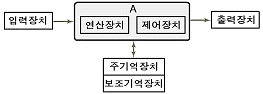

정보기기운용기능사 (2008-03-30 기출문제)
1과목: 전산 기초 이론
1. 주기억장치안의 프로그램 양이 많아질 때, 사용하지 않은 프로그램을 보조기억장치안의 특별한 영역으로 옮겨서, 그 보조기억장치 부분을 주기억장치처럼 사용할 수 있는 것을 무엇이라 하는가?
- 채널
- 캐시기억장치
- 연관기억장치
- 가상기억장치
(정답률: 67%)

2. 패리티 비트(parity bit)에 대한 설명으로 틀린 것은?
- 오류 비트를 검사하기 위하여 사용한다.
- 정보단위에 여유를 주기 위하여 사용한다.
- 우수(Even)체크에 사용 할 수 있다.
- 기수(Odd)체크에 사용 할 수 있다.
(정답률: 69%)
3. 중앙처리장치의 레지스터는 무엇으로 구성되어 있는가?
- 플립플롭들이나 래치들로 구성
- 메모리 또는 저항으로 구성
- TR 과 OR 게이트로 구성된 연산장치
- 메모리 또는 LED로 구성
(정답률: 70%)
4. 다음 중 포인터 자료 표현 방식에서 변수 전달 방법에 해당되지 않는 것은?
- call by value 방식
- call by reference 방식
- call by name 방식
- call by exercise 방식
(정답률: 73%)
5. 전가산기(Full Adder)는 어떤 회로로 구성되는가?
- 반가산기 2개와 AND 게이트로 구성된다.
- 반가산기 2개와 OR 게이트로 구성된다.
- 반가산기 1개와 AND 게이트로 구성된다.
- 반가산기 1개와 OR 게이트로 구성된다.
(정답률: 86%)
6. 컴퓨터 하드웨어 구성요소를 나타낸 것이다. A에 대한 설명으로 옳지 않은 것은?

- 데이터의 산술 및 논리 연산을 수행한다.
- 주기억 장치에 저장된 명령이나 데이터를 가져온다.
- 명령 코드를 해독하여 필요한 제어 신호를 발생시킨다.
- 컴퓨터의 중요한 작업공간으로 수행할 명령들을 저장하는 대용량 장치이다.
(정답률: 70%)
7. 영문 대문자 수 36개, 한글 12자, 0에서 9까지의 수 10개를 컴퓨터 언어로 나타내려면 최소한 몇 bit가 필요한가?
- 4
- 5
- 6
- 7
(정답률: 66%)
8. 운영체제(Operating System)의 정의에 대해 올바른 설명은?
- 프로그램을 사용하여 하드웨어를 최대한 활용할 수 있도록 하여 최대의 성능을 발휘하도록 하는 소프트웨어 시스템
- 시스템 전체의 움직임을 감시하는 것
- 제어 프로그램의 감시 하에 특정 문제를 해결하기 위한 것
- 원시프로그램을 기계어로 번역하기 위한 것
(정답률: 82%)
9. 다음 저장 장치 중 자성 물질을 이용한 것이 아닌 것은?
- CD-ROM
- 자기 테이프
- 하드 디스크
- 플로피 디스크
(정답률: 59%)
10. 불 대수의 기본법칙으로 틀린 것은?
- A+(B+C)=(A+B)+C
- A+(BㆍC)=(A+B)ㆍ(A+C)
- A+(AㆍB)=A
- Aㆍ(A+B)=B
(정답률: 58%)
2과목: 정보 기기 운용
11. 정보기기의 운용 보존을 위한 시험에 해당되지 않는 것은?
- 요구성 시험
- 실용성 시험
- 환경 시험
- 신뢰성 시험
(정답률: 49%)
12. 네트워크상의 전 장비들의 중앙감시체제를 구축하여 모니터링, 계획 및 분석이 가능하여야 하며 관련 데이터를 보관하여 필요한 즉시 활용 가능하게 하는 관리 시스템은?
- NMS
- MIS
- CRM
- IMS
(정답률: 46%)
13. 국가정보원에서 정의한 보안 USB의 필수 기능이 아닌 것은?
- 사용자 식별ㆍ인증 기능
- 지정데이터 양ㆍ복호화 기능
- 지정된 자료의 임의 복제 횟수 제한 기능
- 분실시 저장 데이터의 보호를 위한 삭제 기능
(정답률: 56%)
14. 어떤 전원 회로에서 부하시 전압이 10[V]이고, 무부하시 전압이 12[V]일 때 나오는 직류전원회로의 전압변동률은?
- 20[%]
- 30[%]
- 40[%]
- 50[%]
(정답률: 71%)
15. 도체에 5[A]의 전류가 1분간 흘렀다. 이 때 도체를 통과한 전기량은 얼마인가?
- 5[C]
- 30[C]
- 50[C]
- 300[C]
(정답률: 81%)
16. 네트워크 서비스 공급업체가 고객 간에 체결하는 계약으로, 대개 어떤 서비스가 제공될 것인지를 측정이 가능한 조건으로 명시한 것은?
- agency
- ADSL
- VDSL
- SLA
(정답률: 45%)
17. 시스템의 보안이 제거된 비밀통로로서, 서비스 기술자나 유지보수 프로그래머들의 접근 편의를 위해 시스템 설계자가 고의적으로 만들어 놓은 것은?
- firewall
- log-in
- backdoor
- port
(정답률: 74%)
18. 100Ω의 저항에 1분간 1A의 전류가 흐를 때 발생하는 열량은 약 몇 kcal 인가?
- 1.44
- 2.45
- 3.46
- 4.47
(정답률: 71%)
19. 인터넷상에서 다수의 시스템이 협력하여 하나의 표적시스템을 공격함으로써 DoS(denial of service)를 일으키게 만드는 것을 무엇이라 하는가?
- ADos
- BDoS
- CDoS
- DDoS
(정답률: 84%)
20. 다음 중 웹 서버 소프트웨어가 아닌 것은?
- apache
- IIS
- WebtoB
- HTML
(정답률: 65%)
21. 부하저항이 100[Ω]인 전열기에 200[V]를 가할 때, 전열기에서 소비되는 전력은?
- 100[W]
- 200[W]
- 400[W]
- 20000[W]
(정답률: 51%)
22. 일정한 전압을 유지시켜 주면서 순간 정전에 대비하여 배터리 장치를 갖추어 정전이 되어도 일정시간 동안 전원을 공급할 수 있는 장치는?
- DSU
- AVR
- UPS
- HUB
(정답률: 74%)
23. 다음 설명 중 틀린 것은?
- 옴의 법칙은 저항 R, 전류 I, 전압 V 사이에 I=VㆍR의 관계가 성립한다.
- 키르히호프 법칙에서 회로망 중 임의의 접합점에 유입되는 전류와 접합점으로 부터 나오는 전류의 대수적 총합은 0이다.
- 다이오드는 반도체이다.
- 우리나라 가정용 전기의 주파수는 60Hz 이다.
(정답률: 69%)
24. 다음 중 컴퓨터와 연결하여 통신 시스템의 망을 구성할 때 가장 접속하기 어려운 것은?
- 텔레텍스트
- 팩시밀리
- FM송수신기
- 비디오텍스
(정답률: 62%)
25. 초기에는 난시청 해소를 위하여 설치되었으며, 많은 채널을 이용하여 가입자에게 다양한 정보를 제공하고 있는 시스템은?
- CATV
- HDTV
- BcN
- CCTV
(정답률: 74%)
26. 인터넷서비스의 종류가 아닌 것은?
- 전자우편 서비스
- telnet 서비스
- ftp 서비스
- security 서비스
(정답률: 59%)
27. KTF의 SHOW와 SK텔레콤의 3G+에서 상용화하여 서비스되는 3세대 이동통신 기술 표준은?
- TDMA
- WLAN
- WCDMA
- WDMA
(정답률: 55%)
28. 다음 중 시간에 따라 전류의 흐르는 방향과 크기가 주기적으로 변화하는 것은?
- 건전지
- 직류발전기
- 정류기
- 일반 가정용 전기
(정답률: 56%)
29. PC를 이용하는 작업에서 권장 사항이 아닌 것은?
- 조명은 형광등보다 자연 직사광선이 좋다.
- 장시간 작업할 때 적절한 휴식시간을 갖는다.
- 모니터 화면의 높이를 눈높이보다 약간 낮게 조정한다.
- 눈에서 모니터까지의 거리는 40-50cm 정도를 유지한다.
(정답률: 77%)
30. 데이터 통신용 단말기 중에서 인쇄되거나 또는 손으로 쓴 글씨들을 컴퓨터로 인식하는 장치는?
- MICR
- OMR
- OCR
- CRT
(정답률: 70%)
3과목: 정보 통신 일반
31. PAD의 변수(Parameter)를 규정하고 있는 ITU-T 권고는?
- X.25
- X.3
- X.28
- X.29
(정답률: 62%)
32. 데이터통신의 교환방식에 해당하지 않는 것은?
- 메시지교환
- 수동교환
- 패킷교환
- 회선교환
(정답률: 69%)
33. 다음 중 데이터 통신시스템의 3가지 기본 구성 요소가 아닌 것은?
- 전송회선
- 단말장치
- 원격장치
- 중앙처리장치
(정답률: 60%)
34. 신호의 변조속도가 1600[Baud]이고, 트리비트[tribit]인 경우 전송속도[bps]는?
- 1600
- 2400
- 4800
- 9600
(정답률: 85%)
35. 통신 프로토콜(protocol)의 종류에 해당하지 않는 것은?
- BSC
- SDLC
- ASCⅡ
- DDCMP
(정답률: 58%)
36. 다음 중 PCM 통신방식의 구성이 순서대로 옳은 것은?
- 표본화 → 부호화 → 양자화 → 복호화
- 부호화 → 표본화 → 신장 → 복호화
- 표본화 → 양자화 → 부호화 → 복호화
- 부호화 → 압축 → 표본화 → 복호화
(정답률: 74%)
37. 다음 중 고속 패킷모드(packet mode)의 통신에서 데이터를 다중화하여 전송할 때 가장 효율이 높은 것은?
- 문자입력방식 TDM
- 주파수 분할 FDM
- 비트입력방식 TDM
- 통계적 TDM
(정답률: 48%)
38. 단말기에서 MODEM과 연결되는 RS-232C 25핀 커넥터에서 2번 핀의 기능은?
- 송신요구
- 전송해제
- 수신
- 송신
(정답률: 73%)
39. ISO에서 제정한 OSI 7계층 중 제 6계층에 해당되는 것은?
- 응용계층
- 물리계층
- 표현계층
- 전송계층
(정답률: 76%)
40. LAN의 데이터 전송로 규격 중 10-Base-T에서 “10”이란 무엇을 나타내는가?
- 10[CH]
- 10[㎞]
- 10[Mbps]
- 10[Baud]
(정답률: 68%)
41. 전송로의 주파수 대역폭과 통신 속도와의 관계는?
- 서로 비례한다.
- 통신 속도 제곱에 반비례한다.
- 서로 반비례한다.
- 관계없다.
(정답률: 64%)
42. 정보통신기기에 이용되는 퓨즈(fuse)의 역할을 가장 적합하게 표현한 것은?
- 전자파로부터 이용자를 보호해 준다.
- 강전류로부터 기기를 보호해 준다.
- 유도잡음을 제거해 준다.
- 물리적인 충격으로부터 기기를 보호해 준다.
(정답률: 69%)
43. 다중 회선을 구성하는데 시분할 방식을 채택하려고 할 경우 변조방식으로 적합한 것은?
- PCM
- FM
- AM
- PM
(정답률: 67%)
44. 데이터통신 시스템의 기본 구성요소로 이루어진 것은?
- 데이터 신호계와 처리계
- 데이터 전송계와 처리계
- 데이터 생산계와 분배계
- 데이터 가공계와 응용계
(정답률: 81%)
45. 다음 중 데이터통신에서 오류(error)의 주원인은?
- 임펄스 잡음
- 감쇠
- 누화
- 백색 잡음
(정답률: 42%)
46. 다음 중 LAN의 전송선로에 가장 적합하지 않는 것은?
- 동축 케이블
- UTP 케이블
- 광섬유 케이블
- CCP 케이블
(정답률: 56%)
47. 다음 중 불평형 구조의 선로로 동심 원통형을 이루는 케이블은?
- 무장하케이블
- 장하케이블
- 동축케이블
- 평등케이블
(정답률: 85%)
48. 다음 중 LAN의 특성이라고 볼 수 없는 것은?
- 고속의 정보전송이 가능하다.
- 자원의 공유가 가능하다.
- 외부 통신망의 제약을 받지 않는다.
- 방송 형태로 서비스 이용이 불가능하다.
(정답률: 72%)
49. 데이터 직렬전송(serial transmission)에 관한 설명으로 옳은 것은?
- 데이터 신호를 하나의 회선(채널)을 이용하여 순차적으로 전송한다.
- 정보처리장치에서 1문자 또는 1바이트 단위로 동시 처리한다.
- 다채널로 구성되므로 비경제적이기 때문에 자주 이용되지 않는다.
- 부호의 단위 수만큼 통신로를 사용하여 정보를 한 번에 전송한다.
(정답률: 59%)
50. 펄스변조에서 펄스의 크기는 일정하고, 펄스의 폭이 신호에 따라 변화되는 변조 방식은?
- PAM
- PWM
- DM
- PCM
(정답률: 50%)
4과목: 정보 통신 업무 규정
51. "전기통신을 행하기 위하여 계통적ㆍ유기적으로 연결ㆍ구성된 전기통신설비의 집합체“로 정의되는 것은?
- 전기통신설비
- 정보통신설비
- 전기통신망
- 정보통신망
(정답률: 70%)
52. 다음 중 전기통신사업의 구분으로 옳은 것은?
- 기간통신사업, 별정통신사업, 부가통신사업
- 일반통신사업, 별정통신사업, 공공통신사업
- 공중통신사업, 자가통신사업, 특정통신사업
- 전화통신사업, 데이터통신사업, 우편통신사업
(정답률: 82%)
53. 다음 중 벌칙이 가장 강한 것은?
- 정보통신 기술자를 공사현장에 배치하지 아니한 경우
- 등록을 하지 아니하고 별정통신사업을 경영한 경우
- 신고를 하지 아니하고 자가 통신설비를 설치한 경우
- 전기통신업무에 종사하는 자가 재직 중에 통신에 관하여 알게 된 타인의 비밀을 누설한 경우
(정답률: 75%)
54. 강전류 전선이란 절연물로 싼 전기도체 등으로서 몇 볼트 이상의 전력을 송전하거나 배전하는 전선을 말하는가?
- 220
- 300
- 450
- 600
(정답률: 80%)
55. 다음 중 전기통신기본법의 제정 목적으로 적합하지 않은 것은?
- 공공복리의 증진
- 이용자의 편의 도모
- 전기통신의 발전 촉진
- 전기통신의 효율적 관리
(정답률: 43%)
56. 전기통신사업자의 보편적 역무의 구체적 내용을 정하기 위한 고려사항으로 적합하지 않은 것은?
- 미풍양속의 진작
- 전기통신역무의 보급 정도
- 공공의 이익과 안전
- 정보통신기술의 발전 정도
(정답률: 61%)
57. “전기통신역무와 이를 이용하여 정보를 제공하거나 정보의 제공을 매개하는 것”으로 정의되는 것은?
- 정보통신망
- 정보통신제공자
- 정보보호산업
- 정보통신서비스
(정답률: 46%)
58. 건전한 정보문화를 창달하고 정보통신의 올바른 이용환경을 조성하기 위해 정부가 설립한 것은?
- 한국정보사회진흥원
- 정보통신윤리위원회
- 정보통신진흥위원회
- 한국정보통신기술협회
(정답률: 56%)
59. “전기통신설비를 이용하여 타인의 통신을 매개하거나 전기통신설비를 타인의 통신용으로 제공하는 것”으로 정의되는 것은?
- 정보통신사업
- 전기통신사업
- 전기통신역무
- 보편적역무
(정답률: 47%)
60. 전기통신기본계획에 포함되지 않아도 되는 사항은?
- 전기통신설비에 관한 사항
- 전기통신교육에 관한 사항
- 전기통신사업에 관한 사항
- 전기통신의 이용효율화에 관한 사항
(정답률: 53%)